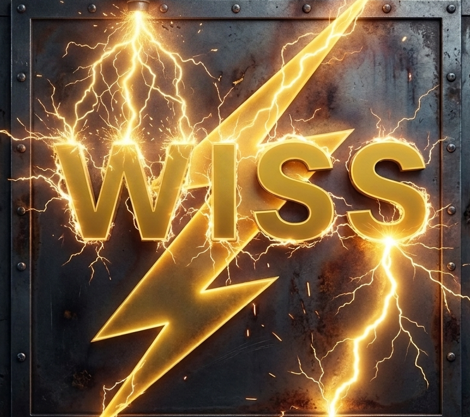
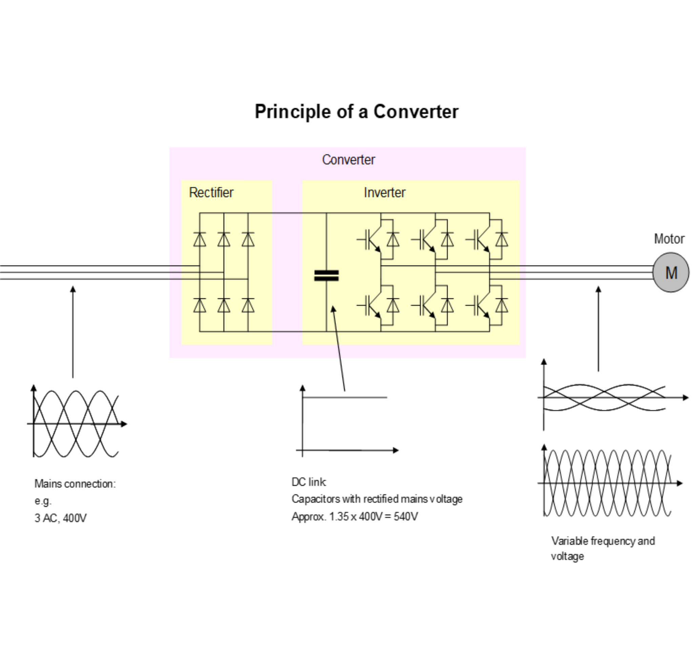
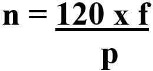
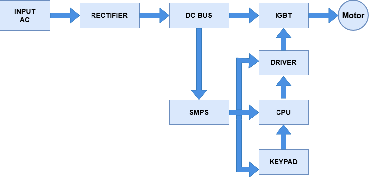
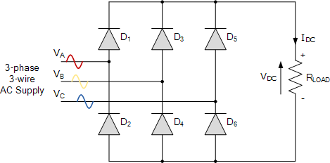
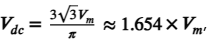
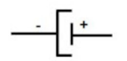
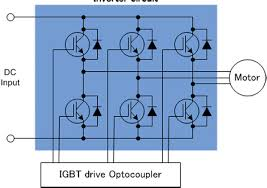

Winder Inverter System(WIS) adalah sistem kontrol penggerak motor (menggunakan inverter) yang dirancang khusus untuk mengatur proses penggulungan (winder) atau pelepasan (unwinder) gulungan material.
Sistem ini umum digunakan pada industri tekstil, pengemasan (kertas/plastik), manufaktur kabel, dan pengolahan logam. Fungsi dan Cara KerjaSistem ini menggunakan Variable Frequency Drive (VFD) atau inverter untuk mengatur kecepatan motor.
Fungsi utamanya meliputi:Kontrol Tegangan (Tension Control): Menjaga ketegangan material (seperti benang, kertas, atau foil) agar tetap konstan saat digulung, sehingga tidak mudah putus atau terlalu kendur.
Penyesuaian Diameter Otomatis: Saat gulungan membesar, inverter secara otomatis menurunkan kecepatan putaran motor (RPM) agar kecepatan linear material tetap stabil.Operasi yang Mulus: Mencegah hentakan atau tarikan tiba-tiba pada awal maupun akhir proses penggulungan.

Inverter adalah rangkaian elektronik daya yang digunakan untuk mengonversikan tegangan searah (DC) ke suatu tegangan bolak-balik (AC). Ada beberapa jenis inverter yang ada sekarang ini, dari yang hanya menghasilkan tegangan keluaran kotak bolak-balik, sampai yang sudah bisa menghasilkan tegangan sinus murni tanpa harmonisa. Inverter satu phasa, tiga phasa sampai dengan multi phasa dan ada juga yang namanya inverter multi level. Ada beberapa cara teknik kendali yang digunakan agar inverter mampu menghasilkan sinyal sinusoidal, yang paling sederhana adalah dengan cara mengatur keterlambatan sudut penyalaan inverter di tiap lengannya. Rumus dasar dari Inverter Barmag WIS:


Inverter Barmag 4 kVA menggunakan rectifier 3 phasa karena inverter merupakan salah satu aplikasi yang menggunakan tegangan tinggi. balik (AC) menjadi sinyal sumber arus searah (DC). Gelombang AC yang berbentuk gelombang sinus dapat dilihat dengan alat ukur oscilloscope.

Penyearah tiga fasa gelombang penuh tak terkendali ini bekerja menggunakan 6 buah dioda yang disusun dalam konfigurasi jembatan (bridge). Sistem ini memiliki efisiensi sangat tinggi mencapai sekitar 99,8% karena mampu memanfaatkan seluruh siklus gelombang input AC secara optimal. Dalam proses konversinya, konfigurasi ini menghasilkan frekuensi ripple berupa 6 pulsa DC per satu siklus input AC, yang membuat tegangan keluarannya jauh lebih rata. Besar tegangan output DC rata-rata tersebut dapat dihitung secara akurat menggunakan rumus:

di mana (V_{m}) merupakan nilai dari tegangan puncak fasa ke netral.
Komponen DC Bus terdiri atas electrolit condensor (ELCO) dengan kapasitas dan rating tegangan yang sesuai dengan kapasitas dari inverter. Tegangan DC yang dihasilkan oleh rectifier akan di filter sehingga dihasilkan tegangan DC yang lebih murni tanpa ada noise atau cacat. Elco pada DC Bus berfungsi menyimpan muatan listrik yang telah disearahkan oleh rectifier. Penyimpanan muatan listrik pada DC Bus bertujuan agar ketika tegangan DC ini digunakan, akan lebih stabil tidak akan secara langsung membebani bagian rectifier.

Penyimpanan listrik pada elco dapat diibaratkan sebagai penyimpanan tangki air. Tanpa penampungan, aliran air langsung dari sumber akan mengecil dan membebani sumber itu sendiri. Begitu pula dengan mekanisme yang terjadi pada DC Bus ini.
Besarnya muatan listrik yang disimpan di dalam kapasitor adalah: Q = C x V Dengan keterangan Q = Nilai muatan elektron listrik dalam satuan coulumb (C). C = Nilai kapasitansi dalam satuan (F). V = Besar tegangan dalam satuan Volt (V).
Tegangan DC link yang disimpan kurang lebih 560 VDC, sehigga inverter aman untuk dioperasikan.Insulated Gate Bipolar Transistor (IGBT) adalah komponen semikonduktor daya utama yang bertindak sebagai sakelar elektronik berkecepatan tinggi dalam rangkaian daya sirkuit inverter. Komponen ini merupakan perangkat hibrida pintar yang menggabungkan keunggulan dari dua teknologi transistor sekaligus, yaitu karakteristik impedansi masukan yang sangat tinggi dari MOSFET pada terminal gate-nya, serta kemampuan menghantarkan arus besar dengan tegangan saturasi rendah yang dimiliki oleh Transistor Bipolar (BJT) pada terminal kolektor dan emitornya. Berkat kombinasi unik ini, IGBT mampu menangani daya, tegangan, dan arus listrik yang sangat besar namun hanya memerlukan daya kemudi yang sangat kecil dari driver card. Karakteristik ini menjadikannya pilihan utama untuk aplikasi industri berat karena mampu meminimalkan rugi-rugi daya (power losses) dan menekan produksi panas berlebih selama proses konversi energi berlangsung.

Dalam arsitektur inverter tiga fase, komponen IGBT biasanya disusun dalam konfigurasi jembatan (bridge circuit) yang terdiri dari enam buah unit terintegrasi untuk mengendalikan aliran daya ke setiap fase motor. Setiap unit IGBT akan merespons pulsa kendali PWM (Pulse Width Modulation) yang dikirimkan oleh driver card berdasarkan instruksi CPU untuk melakukan proses pensaklaran (membuka dan menutup aliran arus) dalam frekuensi tinggi hingga mencapai puluhan kilohertz. Proses pensaklaran yang super cepat ini berfungsi untuk memotong tegangan searah dari saluran utama (DC Bus) dan menyusunnya kembali menjadi pulsa-pulsa tegangan AC tiruan pada terminal keluaran U, V, dan W.
Kemampuan IGBT dalam melakukan transisi kondisi ON ke OFF secara instan dan presisi inilah yang memastikan bentuk gelombang keluaran tetap halus, sehingga motor listrik dapat berputar dengan efisiensi tinggi, torsi yang stabil, dan kecepatan yang dapat diatur secara akurat.